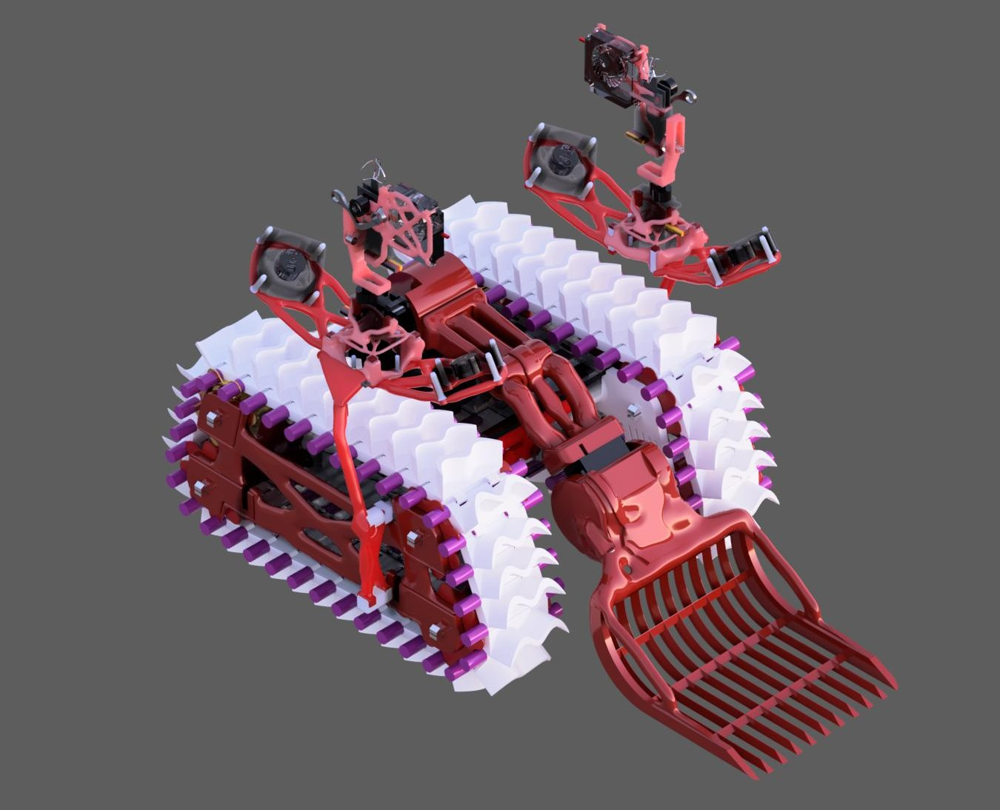

Project Gallery
Payload Rover - ASME
This page shows the design progression of my ASME payload rover chassis. I wanted a simpler layout here so each section can focus on one large image and one body of explanation, making it easier to show design progress, engineering decisions, and what changed between versions.
Overview
Project Goal
The goal of this project was to design and build a fully 3D printed payload rover chassis that could satisfy competition constraints while remaining lightweight, functional, and structurally effective. The design had to balance packaging, strength, printability, and overall practicality.
This page is set up so I can document each major stage of the chassis development process with large visuals and direct explanations underneath them.

Section 1
Initial Concept
Use this section to explain the first version of the rover chassis. Describe what the geometry was trying to accomplish, what constraints you were designing around, and what major requirements drove the initial layout.
This is also a good place to explain wheelbase decisions, general frame shape, how the payload area was considered, and what you expected the structure to do before testing or refinement.
Section 2
Design Iteration
Use this section for a later revision. Explain what changed from the earlier version and why. You can discuss frame members, stiffness concerns, joint decisions, printability, or any issues you noticed after reviewing the first design.
Keep this section focused on the engineering thought process. What was weak, what needed to be improved, and what choices helped move the design in a better direction?
Section 3
Prototype or Structural Revision
This section works well for a printed prototype, a more detailed CAD stage, or a structural revision informed by physical testing or calculations. Explain what you learned from this version and how it changed your confidence in the design.
You can also use this section to describe any load concerns, member behavior, manufacturing limitations, or weight-saving ideas.
Section 4
Final Direction
Use this section to show the most refined version of the chassis and explain why it became the chosen direction. Focus on the final improvements, the best design choices, and what this version achieved better than the earlier ones.
End this section with what you learned from the overall project, including design lessons, manufacturing lessons, and what you would improve next.